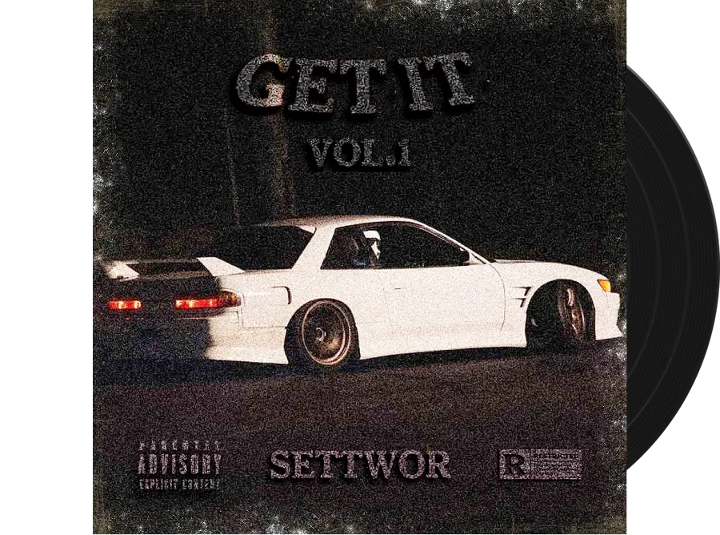

CDRA AwardMay 1, 2025
Award for the track
GOT ME UP 2
SETTWOR
250,000
all-time streams
Presented to SETTWOR to commemorate 250,000 all-time streams of “GOT ME UP 2”

More information
- Award for
- SETTWOR
- Date
- May 1, 2025
- Label
- SETTWOR
- Release Date
- March 15, 2024
Other awards

GOT ME UP 2
by SETTWOR
-
April 3, 2025
100,000 streams — open award page for 100,000 streams
— open award page for 100,000 streams
-
May 1, 2025
250,000 streams
— open award page for 250,000 streams
-
July 22, 2025
500,000 streams
— open award page for 500,000 streams
More about SETTWOR
SETTWOR is a music producer specializing in phonk, hip-hop/rap, and dance/electronic music. Originally from Kryvyi Rih, Ukraine, he relocated to Poland in 2022 and manages a well-known 8D music channel.
In 2018 he began studying music and, having gained some knowledge, released his first track “Light Wave” in 2021.
SETTWOR was born on February 8, 2007, in Kryvyi Rih, Ukraine. In 2020, Daniil took the pseudonym SETTWOR and created a YouTube channel of the same name for his work and future music. On May 8, 2022, the artist’s first track in the phonk genre - Lunatic - was released.